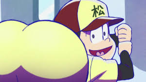

Osomatsu-san
The Sextuplets are the Osomatsu-kun and Osomatsu-san series' main characters and signature troublemakers. Their family name is Matsuno and their birthday is May 24th. In the Osomatsu-kun (Manga), 1966 TV series, 1988 series, and other related projects, they are 10 years old and are in the 5th grade.
